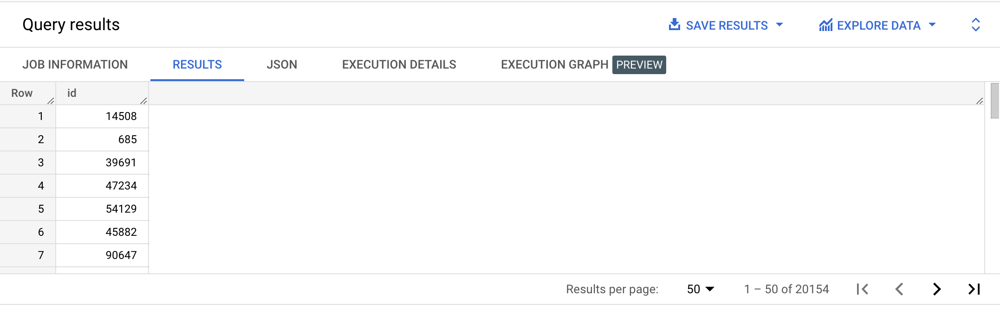
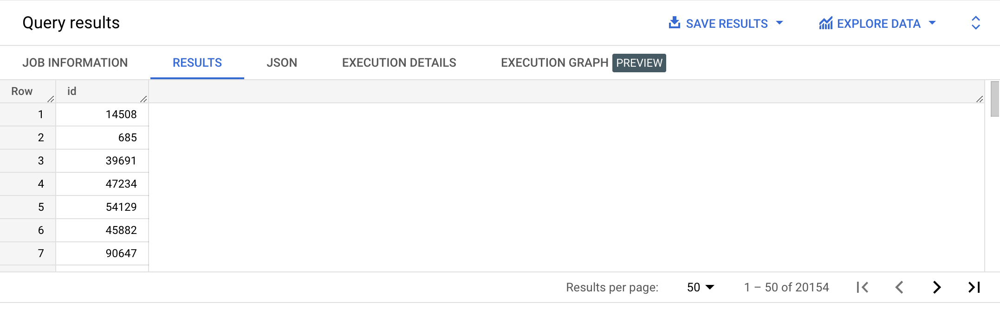
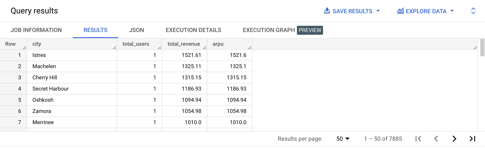

👉 Check out Visual JOIN
| Step | Clause | Description |
|---|---|---|
| 1 | FROM | Chooses the data to get the data from. |
| 2 | JOIN | Join tables. |
| 3 | WHERE | Filters the data. |
| 4 | GROUP BY | Aggregates the data. |
| 5 | HAVING | Filters the aggregated data. |
| 6 | SELECT | Returns the final data. |
| 7 | ORDER BY | Sorts the final data. |
| 8 | LIMIT | Limits the number of rows displayed. |
SELECT *
FROM bigquery-public-data.thelook_ecommerce.users
LEFT JOIN bigquery-public-data.thelook_ecommerce.orders
ON users.id = orders.user_id;
SELECT *
FROM bigquery-public-data.thelook_ecommerce.users
RIGHT JOIN bigquery-public-data.thelook_ecommerce.events
ON users.id = events.user_id;
--WHERE users.id IS NULL;
The RIGHT join is rarely used since the same result can be obtained by changing the order of the table in the LEFT JOIN.
{% include practice_problems_intructions.html %}bigquery-public-data.thelook_ecommerce.users
bigquery-public-data.thelook_ecommerce.orders
Write a query that shows users who never ordered anything.

SELECT users.id
FROM bigquery-public-data.thelook_ecommerce.users users
LEFT JOIN bigquery-public-data.thelook_ecommerce.orders orders
ON users.id = orders.user_id
WHERE orders.order_id IS NULL;
bigquery-public-data.thelook_ecommerce.users
bigquery-public-data.thelook_ecommerce.events
Write a query that shows users who never generated any events.

SELECT users.id
FROM bigquery-public-data.thelook_ecommerce.users users
LEFT JOIN bigquery-public-data.thelook_ecommerce.events events
ON users.id = events.user_id
WHERE events.id IS NULL;
bigquery-public-data.thelook_ecommerce.users
bigquery-public-data.thelook_ecommerce.events
Write a query that shows the percentage of inactive users (users with no events).
| inactive_users | total_users | inactive_users_percent |
|---|---|---|
| 20154 | 100000 | 20.15 |
WITH inactive_users as
( SELECT COUNT(users.id) as user_count
FROM bigquery-public-data.thelook_ecommerce.users users
LEFT JOIN bigquery-public-data.thelook_ecommerce.events events
ON users.id = events.user_id
WHERE events.id IS NULL
)
SELECT (SELECT user_count FROM inactive_users) AS inactive_users,
(SELECT COUNT(*) FROM bigquery-public-data.thelook_ecommerce.users users) AS total_users,
ROUND(
((SELECT user_count FROM inactive_users)
/ (SELECT count(*) FROM bigquery-public-data.thelook_ecommerce.users users)) * 100,
2) AS inactive_users_percent;
bigquery-public-data.thelook_ecommerce.users
bigquery-public-data.thelook_ecommerce.order_items
Write a query that will display:

WITH city_stats AS
( SELECT city,
COUNT(DISTINCT user_id) AS total_users,
ROUND(SUM(CASE WHEN sale_price IS NOT NULL THEN sale_price ELSE 0 END), 2) AS total_revenue,
FROM bigquery-public-data.thelook_ecommerce.users users
LEFT JOIN bigquery-public-data.thelook_ecommerce.order_items order_items
ON users.id = order_items.user_id
GROUP BY city
)
SELECT city,
total_users,
total_revenue,
ROUND(COALESCE(SAFE_DIVIDE(total_revenue, total_users), 0), 2) AS arpu
FROM city_stats
ORDER BY arpu DESC;